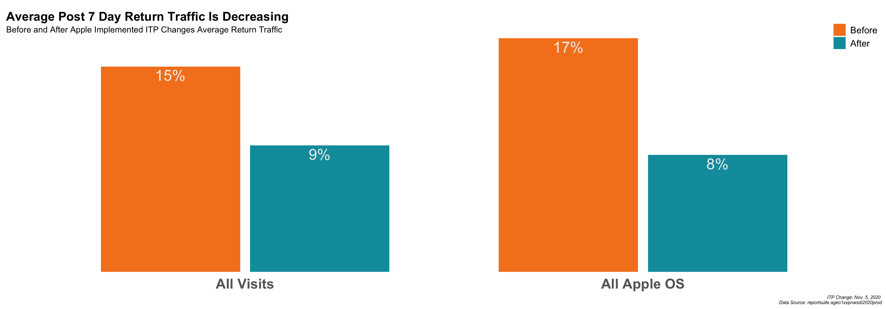

#Setup chunk options
knitr::opts_chunk$set(echo = TRUE,
warning = FALSE,
message = FALSE,
eval = FALSE)Adobe Analytics API Dynamic ITP Report

Heads up! Measuring ITP impact is a classic example of attempting to measure a “moving target”. The example below uses segment definitions that were effective at showing the impact of ITP on traffic as of late 2021. This is for demonstration purposes only.
#install.packages('adobeanalyticsr')
# Download packages needed for the report
library(adobeanalyticsr) #pulls data from Adobe Analytics
library(tidyverse) #used in data wrangling
library(scales) #used for visually cleaner numbers
library(lubridate) #makes working with dates much easier
# library(itpreportr) #internal r package
aw_auth('s2s')Setup for the ITP impact report
The first setup step is identifying the report suite you are going to be using for the report. This can be as easily as looking in the admin for Adobe Analytics or running the aw_get_reportsuites() function in adobeanalyticsr. Either way, this step should be fairly simple.
The second step is usually done through training and reviews but when using code we can generate visuals that more consistently aligned with our expectations. While visuals are still customized for each report, this type of code based deliverable enables us to include visualization best practices into all of our reports and presentations.
Finally, the last step of our setup process is creating the segments and calculated metrics. Historically, we have needed to go into a report suite and create these elements. There were problems with consistent naming conventions and other user errors due to having so many ‘touch points’ in that process. By using the API we have been able to streamline this step in the setup process. It is now a single function that first checks for existing segments with the same name in the account and then builds them if they do not exist.
The power of this report is in the ability to automate the segment creation process and then pull data according to each segment without ever having to log into the user interface. Since the segment definitions use basic dimensions and metrics, there is no need to customize these dimensions across report suite.
#Define the ReportSuite to be used
rsid <- 'lumalucaslidemo'
## Get the base ggplot theme design attributes
tt <- tim_themes()
## Get the Segment ID's
### create the segments and calculated metric
segids <- create_itp_segments()
### assign the ids needed to call the appropriate data
best_seg <- segids$bestseg
worst_seg <- segids$worstseg
return_seg <- segids$returnseg
return_cm <- segids$returncmVisualize the Impact
Now that we have the setup done, we can get right into the visualization part. This has been a hot topic among my peers on the best way to present the ITP Impact. The following visuals are adjusted a little (or a lot) with every client presentation but they give us a solid start to communicating the impact of ITP on their analytics.
90 Day View
The first visual shows the distribution of the ‘Best Case’ Traffic estimate vs the ‘Worst Case’ Traffic segments over the last 90 days.
- First we need to pull the 3 different data sets using the segments.
- We add one column to the results, ‘type’, to help make the distinction between data sets.
#pull the all traffic 90 day data
all.ninetydays <- aw_freeform_table(rsid = rsid,
date_range = c(Sys.Date()-91, Sys.Date()-1),
dimensions = 'daterangeday',
metrics = 'visits') %>%
mutate(type = 'all.visits')
#pull the best case segment traffic 90 day data
best.ninetydays <- aw_freeform_table(rsid = rsid,
date_range = c(Sys.Date()-91, Sys.Date()-1),
dimensions = 'daterangeday',
metrics = c('visits'),
segmentId = best_seg) %>%
mutate(type = 'best.case')
#pull the worst case segment traffic 90 day data
worst.ninetydays <- aw_freeform_table(rsid = rsid,
date_range = c(Sys.Date()-91, Sys.Date()-1),
dimensions = 'daterangeday',
metrics = c('visits'),
segmentId = worst_seg) %>%
mutate(type = 'worst.case')- Now we need to combine the data.
- Due to the fact that all the columns are the same we can use the base
rbindfunction.
#row bind the data together
ninetydays <- rbind(best.ninetydays, worst.ninetydays, all.ninetydays)- Before creating the visual we need the averages and annotations.
- This step includes 2 summary data points to help provide additional information on the chart
#transform the data a bit to present percentages
avg_traffic <- ninetydays %>%
pivot_wider(names_from = type, values_from = visits) %>%
mutate(bestcase_prop = round(best.case/all.visits, digits = 2),
worstcase_prop = round(worst.case/all.visits, digits = 2)) %>%
mutate(avg_worst = round(mean(worstcase_prop), digits = 2),
avg_best = round(mean(bestcase_prop), digits = 2)) %>%
distinct(avg_worst, avg_best)
#define where the annotations should appear on the chart
annotation_location <- ninetydays %>%
filter(daterangeday == max(ninetydays$daterangeday)-30) %>%
pivot_wider(names_from = type, values_from = visits) %>%
mutate(bestcase_prop = round(best.case/all.visits, digits = 2),
worstcase_prop = round(worst.case/all.visits, digits = 2)) %>%
select(daterangeday, bestcase_prop, worstcase_prop)- Finally we create the visual.
- This can look intimidating at first but visual customization is a big reason for doing the ITP Impact Report in R
- We usually only have to adjust the 2 items commented below in the code. (‘#’ signifies a comment)
#create the visualization using the data
ninetydays %>%
pivot_wider(names_from = type, values_from = visits) %>%
mutate(bestcase_prop = round(best.case/all.visits, digits = 2),
worstcase_prop = round(worst.case/all.visits, digits = 2)) %>%
mutate(avg_worst = round(mean(worstcase_prop), digits = 2),
avg_best = round(mean(bestcase_prop), digits = 2)) %>%
select(daterangeday,bestcase_prop, worstcase_prop, avg_worst, avg_best) %>%
pivot_longer(cols = 2:3) %>%
ggplot(aes(daterangeday, value, color = name)) +
geom_line() +
scale_color_manual(values = c('#F58220', '#009CAB')) +
scale_y_continuous(labels = scales::percent, limits = c(0, 1) ) +
annotate('text',
label= glue::glue('Worst Case Avg. \n {scales::percent(avg_traffic$avg_worst)}'),
x = max(ninetydays$daterangeday)-10,
y = annotation_location$worstcase_prop + .29, #adjust the distance from the 'worst' line on the graph
color = '#009CAB',
fill = 'white') +
annotate('text',
label= glue::glue('Best Case Avg. \n {scales::percent(avg_traffic$avg_best)}'),
x = max(ninetydays$daterangeday)-10,
y = annotation_location$bestcase_prop + .15, #adjust the distance from the 'best' line on the graph
color = '#F58220',
fill = 'white') +
tt$theme_lines +
theme(legend.position = 'none', title = element_text(vjust = 1),
plot.title = element_text(face = 'plain', hjust = 0.0),
plot.subtitle = element_text(color = '#333333', vjust =5),
plot.caption = element_text(color = '#888888', face = 'italic', size = 8) ) +
labs(title = "Estimated Best and Worst Case ITP Impacted Traffic",
subtitle = '90 Day Traffic Trend and Average',
caption = glue::glue('Data Source: reportsuite *rsid*'))Larger Trend by Month
This next visual gives a larger look-back window and summarizes it by month as opposed to day. It is intended to help the analyst answer the following questions:
- Has traffic been steady, increasing, or decreasing?
- Do we see seasonality trends?
It also should inform whether or not we will expect changes going forward for volume of Best and Worst Case visits.
- Pull the data
Because we want the best look-back window possible we start by defining how many days March 1, 2020 was from today. This number will be used in the function argument date_range to make sure we include much of 2020 without having to do much additional math. We could add the data in the character form, ‘2020-04-01’, but then we would have to define today’s date in the same character format in order for the c() function to send in the date range correctly. It’s easier to define the days since today and then just subtract it from today’s date.
#determine the number of days to subtract from today
dayssince200401 <- as.numeric(Sys.Date()-1 - as.Date('2020-04-01'))
#pull the data
all.12months <- aw_freeform_table(rsid = rsid,
date_range = c(Sys.Date()-dayssince200401, Sys.Date()-1),
dimensions = 'daterangemonth',
metrics = c('visits')) %>%
mutate(type = 'all.visits')
best.12months <- aw_freeform_table(rsid = rsid,
date_range = c(Sys.Date()-dayssince200401, Sys.Date()-1),
dimensions = 'daterangemonth',
metrics = c('visits'),
segmentId = best_seg) %>%
mutate(type = 'best.case')
worst.12months <- aw_freeform_table(rsid = rsid,
date_range = c(Sys.Date()-dayssince200401, Sys.Date()-1),
dimensions = 'daterangemonth',
metrics = c('visits'),
segmentId = worst_seg) %>%
mutate(type = 'worst.case')- Bind the rows
## bind the data sets together
twelvemonths <- rbind(best.12months, worst.12months, all.12months)- Get additional data points
- As in the previous section, we need to do a little data wrangling to get additional points of information.
# Transform the daterangemonth column to date, just in case.
twelvemonths <- twelvemonths %>%
mutate(date = lubridate::my(daterangemonth))
# Define how man months we are looking at
monthscount <- length(unique(twelvemonths$daterangemonth))
# Get the averages in traffic
avg_traffic <- twelvemonths %>%
pivot_wider(names_from = type, values_from = visits) %>%
mutate(bestcase_prop = round(best.case/all.visits, digits = 2),
worstcase_prop = round(worst.case/all.visits, digits = 2)) %>%
mutate(avg_worst = round(mean(worstcase_prop), digits = 2),
avg_best = round(mean(bestcase_prop), digits = 2)) %>%
distinct(avg_worst, avg_best)
# Define the annotations needed for the visual
annotation_location <- twelvemonths %>%
filter(date == max(floor_date(twelvemonths$date))) %>%
pivot_wider(names_from = type, values_from = visits) %>%
mutate(bestcase_prop = round(best.case/all.visits, digits = 2),
worstcase_prop = round(worst.case/all.visits, digits = 2)) %>%
select(date, bestcase_prop, worstcase_prop)- Visualize the longer trended data
twelvemonths %>%
pivot_wider(names_from = type, values_from = visits) %>%
mutate(bestcase_prop = round(best.case/all.visits, digits = 2),
worstcase_prop = round(worst.case/all.visits, digits = 2)) %>%
mutate(avg_worst = round(mean(worstcase_prop), digits = 2),
avg_best = round(mean(bestcase_prop), digits = 2)) %>%
select(date, bestcase_prop, worstcase_prop, avg_worst, avg_best) %>%
pivot_longer(cols = 2:3) %>%
ggplot(aes(date, value, color = name)) +
geom_line() +
scale_color_manual(values = c('#F58220', '#009CAB')) +
annotate('text',
label= glue::glue('Worst Case'),
x = max(twelvemonths$date)-30,
y = annotation_location$worstcase_prop + .07,
color = '#009CAB',
fill = 'white') +
annotate('text',
label= glue::glue('Best Case'),
x = max(twelvemonths$date)-30,
y = annotation_location$bestcase_prop + .07,
color = '#F58220',
fill = 'white') +
tt$theme_lines +
theme(legend.position = 'none',
title = element_text(vjust = 1),
plot.title = element_text(face = 'plain', hjust = 0.0),
plot.subtitle = element_text(color = '#333333', vjust =5),
plot.caption = element_text(color = '#888888', face = 'italic', size = 8)) +
geom_vline(xintercept = as.Date('2020-11-04'), #this mark the vertical line when ITP was launched
color = 'light grey', linetype = 3) +
annotate('text',
label = 'Nov 5 Apple ITP',
angle = 90, x = as.Date('2020-10-30'),
y = .75, color = 'light grey') +
scale_y_continuous(labels = percent, limits = c(0, 1) ) +
scale_x_date(breaks = '2 months', date_labels = "%b '%y") +
labs(title = "Apple OS Traffic Has Been Increasing", #change the title
subtitle = glue::glue('{monthscount} Month ITP At Risk Traffic'), #change the subtitle
caption = glue::glue('Data Source: reportsuite *rsid*')) Example of ITP Analytics Impact
This final visual takes the percentage of returning after 7 day visits before and after the date ITP was implemented on November 5th, 2020. It is used to illustrate of one of the impacts of ITP on reporting.
- Pull the data
dr = c(as.Date('2020-05-01'), Sys.Date()-1)
all.prev12 <- aw_freeform_table(rsid = rsid,
date_range = dr,
dimensions = 'daterangemonth',
metrics = c('visits', return_cm),
prettynames = F) %>%
mutate(type = 'all.visits') %>%
dplyr::rename(visits7days = 3)
best.prev12 <- aw_freeform_table(rsid = rsid,
date_range = dr,
dimensions = 'daterangemonth',
metrics = c('visits', return_cm),
segmentId = best_seg,
prettynames = F) %>%
mutate(type = 'best.case') %>%
dplyr::rename(visits7days = 3)
worst.prev12 <- aw_freeform_table(rsid = rsid,
date_range = dr,
dimensions = 'daterangemonth',
metrics = c('visits', return_cm),
segmentId = worst_seg,
prettynames = F) %>%
mutate(type = 'worst.case') %>%
dplyr::rename(visits7days = 3)- Bind the data
prev12 <- rbind(best.prev12, worst.prev12, all.prev12)- Transform the data
- The biggest change in this step over the previous transformation steps is categorizing the date as being ‘after’ or ‘before’ the ITP changes.
prev12 <- prev12 %>%
mutate(date = lubridate::my(daterangemonth))
avg7dayreturns <- prev12 %>%
mutate(sinceitp = if_else(date > as.Date('2020-10-31'), 'After', 'Before'))- Visualize the data
avg7dayreturns %>%
mutate(type = case_when(type == 'all.visits' ~ 'All Visits',
type == 'best.case' ~ 'Recent Apple OS',
type == 'worst.case' ~ 'All Apple OS')) %>%
group_by(sinceitp, type) %>%
summarise(avg7dayreturns = sum(visits7days, na.rm = T)/sum(visits, na.rm = T)) %>%
mutate(type = factor(type, levels = c('All Visits', 'All Apple OS', 'Recent Apple OS'))) %>%
mutate(sinceitp = factor(sinceitp, levels = c('Before', 'After'))) %>%
filter(type != 'Recent Apple OS') %>%
ggplot(aes(type, avg7dayreturns, fill = sinceitp)) +
geom_bar(stat = 'identity', position = position_dodge(width = .75 ), width = .7) +
geom_text(aes(label = percent(avg7dayreturns, accuracy = 1)), position = position_dodge(width = .75), vjust =1.3, color = '#efefef', size = 7) +
tt$theme_bar_nolines +
scale_y_continuous(expand = c(0, 0)) +
theme(axis.text.y = element_blank(), legend.position = c(1,1.1), legend.justification = c(1,1),
legend.background = element_blank(), plot.title = element_text(hjust = 0, vjust = -2),
plot.caption = element_text(face = 'italic', size = 6)) +
scale_fill_manual(values = c('#F58220', '#009CAB')) +
labs(title = "Average Post 7 Day Return Traffic Is Decreasing",
subtitle = 'Before and After Apple Implemented ITP Changes - Average Return Traffic',
caption = glue::glue('ITP Change: Nov. 5, 2020 \n Data Source: reportsuite *rsid*'))Using this framework creates the images but most importantly, enables the analyst to quickly add in-line commentary and recommendations to the final deliverable.